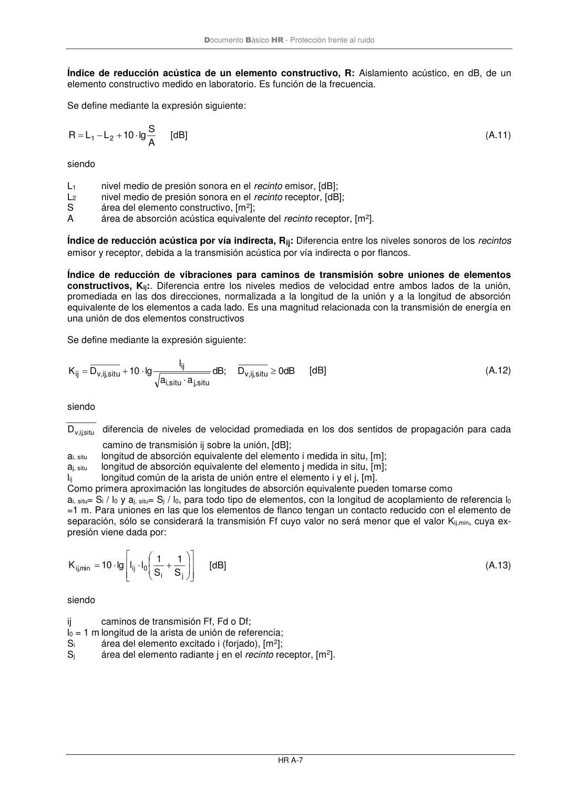

DB-HR · Página 49 · versión 2019-12-20
SHA256: a67baeca5138bb1f121f797d23a79a4557bd9ac4abacd954024893e05411eeab · página física 49 de 80 · métodos de encabezado
solo si están cotejados.
Formatos: Markdown · JSON de bloques · PDF p. 49 · imagen PNG
Documento Básico HR - Protección frente al ruido
HR A-7
Índice de reducción acústica de un elemento constructivo, R: Aislamiento acústico, en dB, de un
elemento constructivo medido en laboratorio. Es función de la frecuencia.
Se define mediante la expresión siguiente:
A
S
lg
10
L
L
R
2
1
+
−
=
[dB]
(A.11)
siendo
L1
nivel medio de presión sonora en el recinto emisor, [dB];
L2
nivel medio de presión sonora en el recinto receptor, [dB];
S
área del elemento constructivo, [m2];
A
área de absorción acústica equivalente del recinto receptor, [m2].
Índice de reducción acústica por vía indirecta, Rij: Diferencia entre los niveles sonoros de los recintos
emisor y receptor, debida a la transmisión acústica por vía indirecta o por flancos.
Índice de reducción de vibraciones para caminos de transmisión sobre uniones de elementos
constructivos, Kij:. Diferencia entre los niveles medios de velocidad entre ambos lados de la unión,
promediada en las dos direcciones, normalizada a la longitud de la unión y a la longitud de absorción
equivalente de los elementos a cada lado. Es una magnitud relacionada con la transmisión de energía en
una unión de dos elementos constructivos
Se define mediante la expresión siguiente:
dB
0
D
;
dB
a
a
l
lg
10
D
K
situ
,ij,v
situ
,j
situ
,i
ij
situ
,ij,v
ij
+
=
[dB]
(A.12)
siendo
situ
,ij,v
D
diferencia de niveles de velocidad promediada en los dos sentidos de propagación para cada
camino de transmisión ij sobre la unión, [dB];
ai, situ
longitud de absorción equivalente del elemento i medida in situ, [m];
aj, situ
longitud de absorción equivalente del elemento j medida in situ, [m];
lij
longitud común de la arista de unión entre el elemento i y el j, [m].
Como primera aproximación las longitudes de absorción equivalente pueden tomarse como
ai, situ= Si / l0 y aj, situ= Sj / l0, para todo tipo de elementos, con la longitud de acoplamiento de referencia l0
=1 m. Para uniones en las que los elementos de flanco tengan un contacto reducido con el elemento de
separación, sólo se considerará la transmisión Ff cuyo valor no será menor que el valor Kij,min, cuya ex-
presión viene dada por:
+
=
j
i
0
ij
min
,ij
S
1
S
1
l
l
lg
10
K
[dB]
(A.13)
siendo
ij
caminos de transmisión Ff, Fd o Df;
l0 = 1 m longitud de la arista de unión de referencia;
Si
área del elemento excitado i (forjado), [m2];
Sj
área del elemento radiante j en el recinto receptor, [m2].
